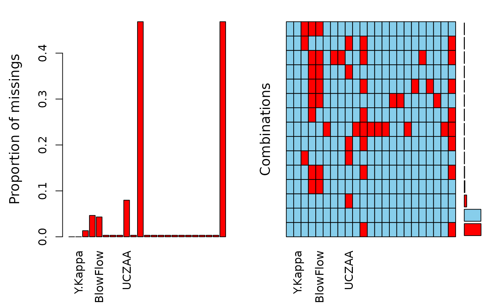

Pulp quality by lignin content remaining
A data frame with 301 observations on the following 23 variables.
https://openmv.net/info/kamyr-digester
Pulp quality is measured by the lignin content remaining in the pulp: the Kappa number. This data set is used to understand which variables in the process influence the Kappa number, and if it can be predicted accurately enough for an inferential sensor application. Variables with a number at the end have been lagged by that number of hours to line up the data.
K. Walkush and R.R. Gustafson. Application of feedforward neural networks and partial least squares regression for modelling Kappa number in a continuous Kamyr digester", Pulp and Paper Canada, 95, 1994, p T7-T13.
#> 'data.frame': 301 obs. of 23 variables: #> $ Observation : Factor w/ 301 levels "1-00:00","1-01:00",..: 134 135 136 137 138 139 140 141 142 143 ... #> $ Y.Kappa : num 23.1 27.6 23.2 23.6 22.9 ... #> $ ChipRate : num 16.5 16.8 16.7 16.5 15.6 ... #> $ BF.CMratio : num 121.7 79 79.6 81 93.2 ... #> $ BlowFlow : num 1178 1328 1329 1335 1334 ... #> $ ChipLevel4 : num 170 341 239 214 243 ... #> $ T.upperExt.2 : num 358 351 350 351 352 ... #> $ T.lowerExt.2 : num 330 329 329 331 333 ... #> $ UCZAA : num 1.44 1.55 1.6 1.6 NA ... #> $ WhiteFlow.4 : num 599 537 550 623 639 ... #> $ AAWhiteSt.4 : num NA 6.08 NA 6.05 6.11 ... #> $ AA.Wood.4 : num 16.5 16.5 16.6 16.6 16.7 ... #> $ ChipMoisture.4: num 46 44 44.5 45.6 45.5 ... #> $ SteamFlow.4 : num 67.1 60 61.3 68.5 70 ... #> $ Lower.HeatT.3 : num 329 331 329 329 328 ... #> $ Upper.HeatT.3 : num 303 305 303 302 301 ... #> $ ChipMass.4 : num 176 163 164 181 184 ... #> $ WeakLiquorF : num 1127 666 678 768 888 ... #> $ BlackFlow.2 : num 1319 1297 1327 1324 1343 ... #> $ WeakWashF : num 257 241 237 239 215 ... #> $ SteamHeatF.3 : num 54.6 46.6 51.8 54.8 54.2 ... #> $ T.Top.Chips.4 : num 252 251 251 250 250 ... #> $ SulphidityL.4 : num NA 29.1 NA 29 29 ...aggr(pulplignin)